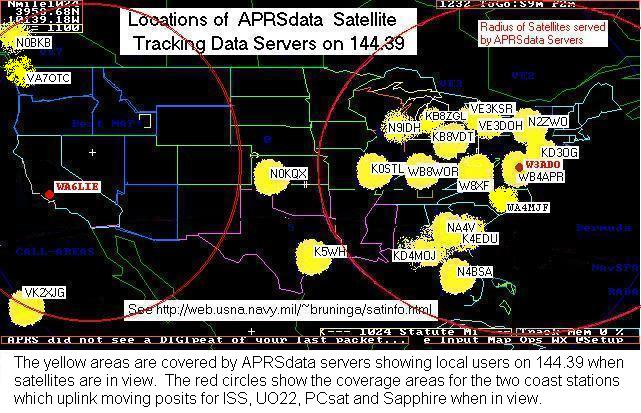
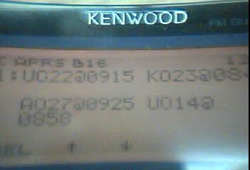
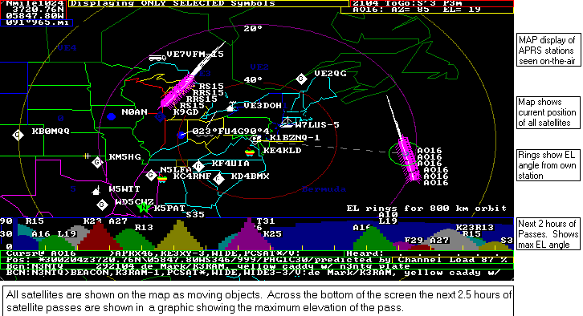
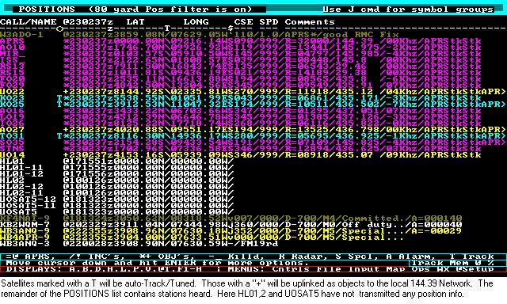

There are two kinds of Satellite Tracking Position Servers. One transmits moving position reports up VIA each digipeating digital satellite so that all users in the footprint can see the exact location of the satellite live on their APRS displays. There is usually only one of these statiions every 3000 miles across the planet. See the red coverage circles on the map below. They run a special version of APRStk.exe...
The other Data Servers serves the same data to all locals on the local APRS data channel in any given local area. These are shown in Yellow on the map below and use a program called APRSdata.exe.

HAM RADIO Handheld WEB pages! Just like is being touted for Cellular phones, you can get all the info you need for tracking and operating satellites in the field with an APRS HT or mobile radio just by tuning in the APRS data being provided on 144.39 anytime, anywhere (assuming you are within range of one of the APRSdata servers shown in yellow above). This data is transmitted just for this purpose by someone in your area who is running APRSdata.EXE. A few stations are also running special versions of APRSdata on the UPlinks of the ISS, PCSAT, SAPPHIRE, OPAL, and UO22 so that these satellites will also digipeat their own positions to users within their footprints. These special stations are shown in Red. At this point we need a station on the Westcoast..
This web page will show you what you will see on your Kenwood THD7 or D700 radio's front panel when it receives one of these packets.
TINY-WEB-PAGES: Sat Tracking is just one of the Tiny-Web-Page capabilities that is available from APRSdata. See OTHER CAPABILITIES.
THD7 HANDHELD: This shows you what the Handheld THD7 HT will capture and display about the satellites. The first is the DX-LIST showing that there are three satellites UO22, AO27 and UO14 coming up in the next 80 minutes and when.


The next two screens show you what you see when a satellite rises above the horizon. The satellite is transmitted by APRSdata as an object so that it is displayed on all APRS screens (and maps if running a laptop). First, it is displayed with its Uplink and Downlink Frequencies (145.825 and 436.25 and Doppler). The final screen shows the Gridsquare, Distance (1483 miles) and Azimuth(SW) from your location. The \S means it is a satellite. Once it gets within about 1500 miles, you can usually hear it on your HT (about 1000 miles with only a rubber duck antenna).
TMD700 MOBILE RADIO: [See W4HFZ's Installation] [or a Radio Closeup].
The next two screens show how the same information is displayed on the larger but wider screen on the TMD700 Mobile radio. The first screen shows the DX-SPOT showing 4 satellites coming up in the next 80 minutes UO22, KO23, AO27 and UO14.


The next screen shows the complete object. It shows the Frequencies, Gridsquare, LAT/LONG range in KM, Azimuth in degrees, and distance in miles, to the satellite. Plus it shows the estimated Doppler!
Thus anyone with a THD7 or TMD700 or any other packet station on 144.39 will capture this information live as a resource for the mobile or handheld that does not have a tracking program on his person at the time. Even while driving! This is not just for the digital satellites. Use this resource to see when AO27, UO14 and SO35 are also going to be workable with voice.
APRSdata.EXE OPERATIONS: This information is made available to all users on the APRS frequency as long as one station somewhere in the local area is running a copy of APRSdata. This program shown below, generates these packets for everyone in the local area. It is just a copy of APRSdos modified to predict satellites. Here is a view of the APRSdata map screen. Note the very handy SAT SCHEDULE across the bottom showing the next 2 hours of passes and their elevations...

To run APRSdata you need to install the new EXE file in your existing APRSdos system. If you do not currently have APRSdos running on your system, first DOWNLOAD APRS848.zip Then DOWNLOAD ADAT-EXE.zip. Install both of these using WinZIP or PKUNZIP (-d) into an APRS directory and run APRSdata.exe. Then read the APRSDATA.TXT. . See the list of the SATELLITES included with APRSdata.
FUTURE OF MOBILE SATELLITE OPERATIONS: Of course, once you can see and predict the satellites from any mobile without a Laptop or PC, then we are hoping to get one or a few of the satellites enabled for packet UI digipeating so that you can communicate Mobile to Mobile Front-panel-to-front-panel via packet anywhere on the planet while the APRS satellite is in view. This concept has been proven to work EASILY with just a mobile 2m whip antenna on any vehicle or even with an HT. For all the info on this exciting new aspect of Amateur Radio Mobile Satellite Communications, see ASTARS
RADIO CONTROL/TUNING:
There is another version of APRSdos called APRStk.exe that can also QSY and TUNE the kenwood radios for each pass without operator intervention. There are currently SEVEN Amateur satellites that can be copied in the Mobile with either Voice or the built-in 9600 Baud TNC's. These are: UO14, UO22, KO23, KO25, AO27, TO31, SO35. All satellites for which you have Keplarian elements will show up on your POSITIONS LIST with their positions updated every few seconds or so. To select the satellites for AUTO-TRACK/TUNE, just select them on the POSITION list with the letter "T". Or to uplink them to the local area on 144.39, simply mark them with a "+" as shown below. Of course anyone else on frequency (including the satellite downlinks) will show up on your list and on your Maps too.

See other related APRS Satellite Pages:
Return to the APRS HOMEPAGE
![[See W4HFZ's Installation]](D7xx/W4HFZ-mobile.JPG){kind=link}
![[or a Radio Closeup]](D7xx/TM-D700A.gif){kind=link}